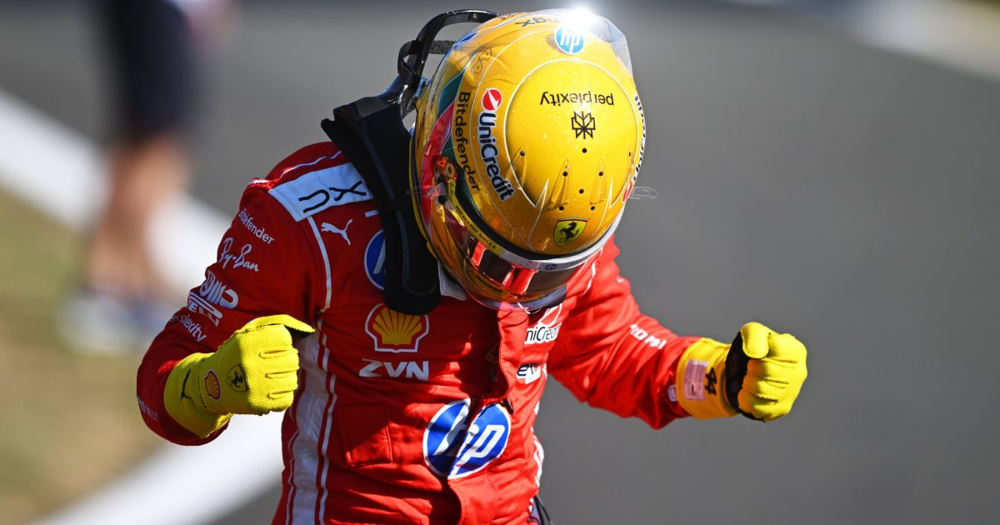

A sexta-feira de treinos livres e classificação sprint do GP da Grã-Bretanha

https://grandepremio.com/br/f1/confira-declaracoes-pilotos-classificacao-sprint-gp-inglaterra-f1-2026/
A sexta-feira de treinos livres e classificação sprint do GP da Grã-Bretanha pegou fogo no tradicional circuito de Silverstone. Com o formato dinâmico de apenas uma sessão de treinos livres, as equipes e pilotos tiveram que se virar nos trinta, o que gerou muito estresse nos boxes e pérolas hilárias via rádio.
Domínio da Ferrari no TL1: Lewis Hamilton liderou a única sessão de treinos livres com o tempo de 1min29s260, superando o prodígio da Mercedes, Andrea Kimi Antonelli, por apenas 0s213.
Pole Sprint Emocionante: Na hora de definir o grid para o sábado, Hamilton repetiu a dose e cravou a Pole Position da Sprint com 1min28s376, batendo Antonelli por uma diferença absurda de apenas 0s011!
Atrás dos ponteiros: Max Verstappen (Red Bull) ficou em terceiro, seguido de perto por Charles Leclerc (Ferrari) e George Russell (Mercedes).
O Brasil no Grid: O jovem brasileiro Gabriel Bortoleto, estreante na Audi, teve uma performance sólida e garantiu a 12ª colocação, largando logo à frente do seu experiente companheiro Nico Hülkenberg
(Para mais detalhes, ver a matéria: Grã-Bretanha )
🎙️ O Rádio dos Pilotos: O Desespero em 300 km/h
"O carro respondeu feito mágica, rapazes! Mas por favor, avisem a torcida nas arquibancadas para segurarem o fôlego até amanhã, porque meu coração quase ficou na curva Copse!" - Lewis Hamilton (em êxtase após cravar a pole da corrida sprint pela Ferrari) comentou.
"Tem tanto carro lento no terceiro setor que parecia que eu estava procurando vaga de estacionamento em supermercado no sábado de manhã! Desse jeito fica difícil!" - Andrea Kimi Antonelli (Mercedes, reclamando do tráfego na qualificação).
"Estou lutando tanto contra o vento e o carro nessa reta que me senti pilotando um tijolo com asas. Corrigir a traseira na curva Maggots quase me custou os dentes! - Max Verstappen (reclamando do balanço da Red Bull no vento britânico).
"Eu juro que tentei ficar dentro da linha branca, mas o asfalto extra me olhou com tanto carinho que o carro foi atraído por magnetismo! Não deletem minha volta, comissários!" - Gabriel Bortoleto (Audi, desabafando sobre os limites de pista).
Reportagem escrita por: Li_yamauti.
Fontes:
https://share.google/dAd6PyinKdOHgvQNw
https://share.google/IgcXluFynOEimmODx
https://share.google/kVrUvbgdXfYetfLP3
https://share.google/COQftCZ6ZuvirmMIa